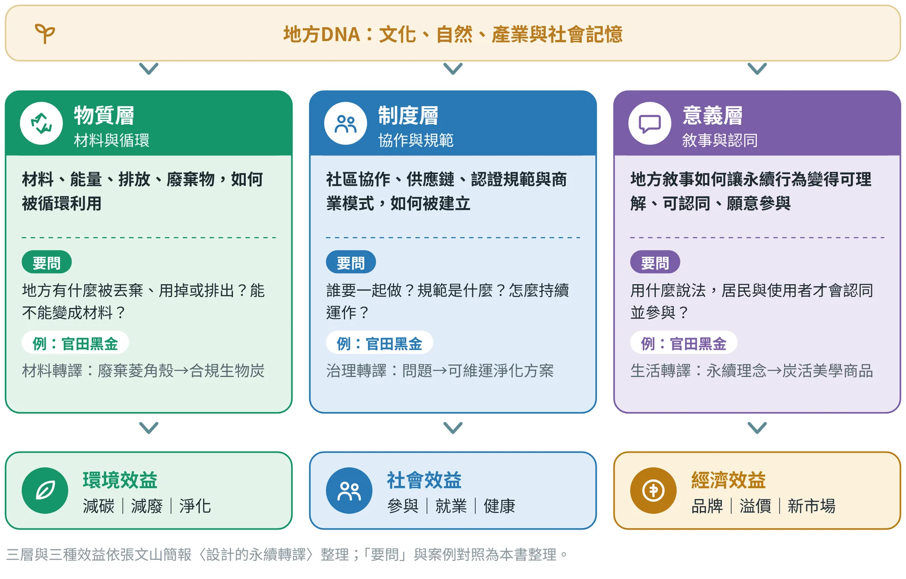
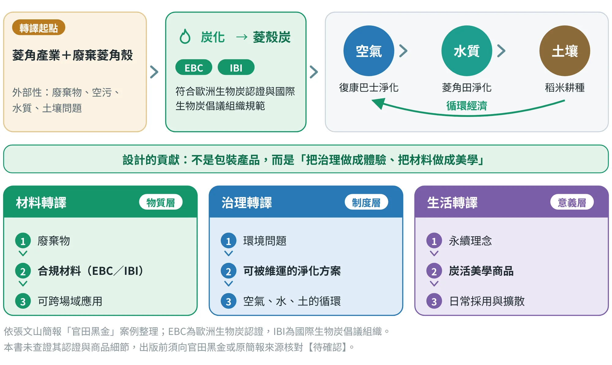
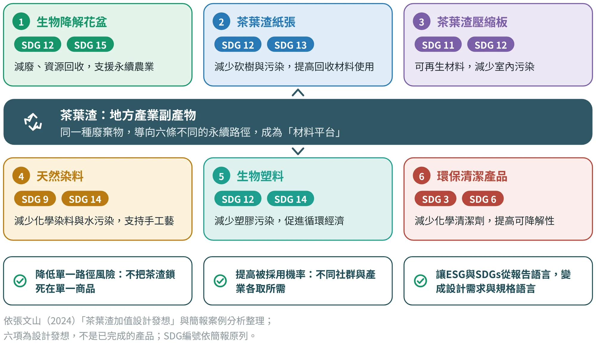
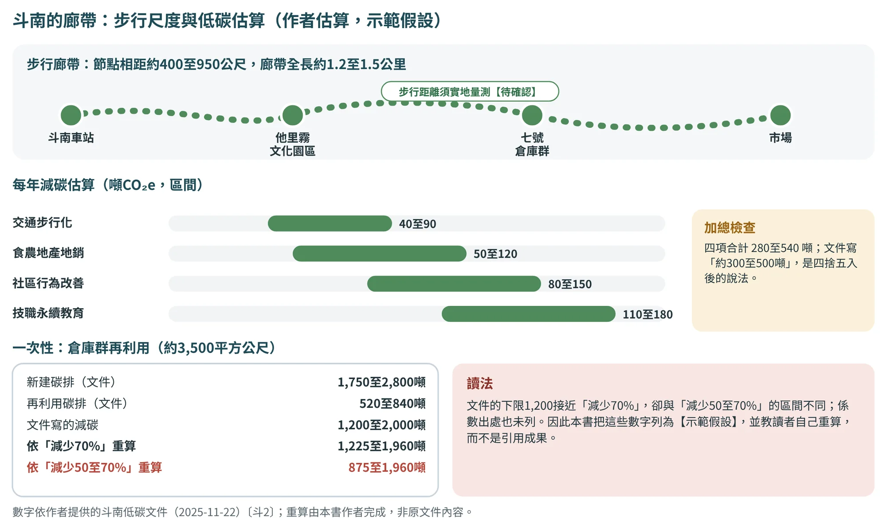
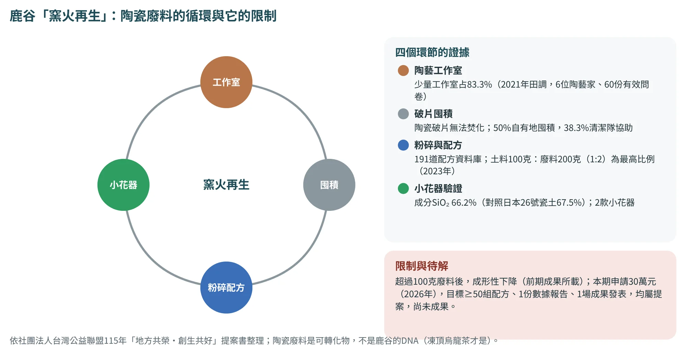
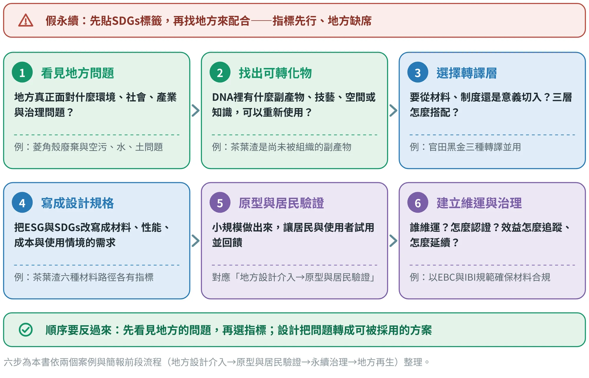
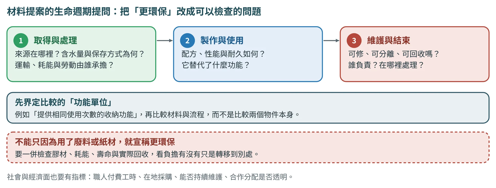
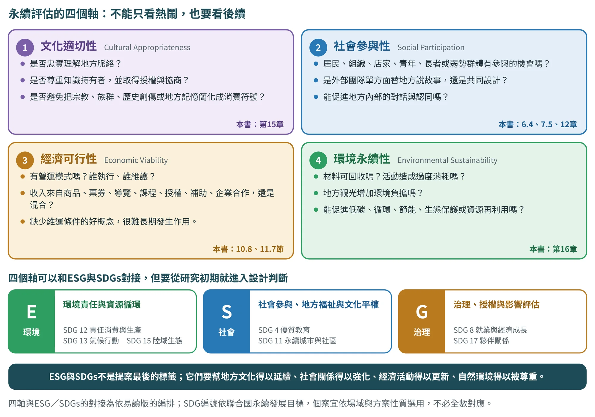

設計的永續轉譯
把地方DNA變成社會願意採用的永續解方，而不是替設計貼上永續標籤
16.1什麼是設計的「永續轉譯」#
前面各章談的是怎麼從地方DNA走到色彩、圖紋、商品與遊程。這一章要補上一個問題：這些設計，能不能同時為地方的環境、社會與經濟帶來好處？作者在簡報中給了一個定義：設計的「永續轉譯」，是把在地本質，變成可被使用的永續解方。它不是把地方元素「做成好看」，而是把地方DNA（文化、自然、產業與社會記憶）轉化為三種可以落地的永續價值。
三種價值各自回答不同的問題（圖16.1）：物質層問「什麼被循環利用」，制度層問「誰來協作、規範是什麼」，意義層問「怎麼說，人們才會認同並參與」。一個好的永續轉譯，通常三層都有：只有物質層，是一項技術；只有意義層，是一個口號；少了制度層，做出來也沒人持續維運。

這也呼應第1章列出的第12個地方問題：永續、ESG與地方脫節。常見的做法，是在提案書後面貼上SDGs與ESG標籤，卻沒有回答地方真正面對什麼問題，形成「指標先行、地方缺席」的假永續。永續轉譯的出發點恰好相反：先理解地方，指標是從地方的問題長出來的。
16.2案例一：官田黑金，把廢棄物轉成循環材料#
作者把這個案例的設計貢獻，歸納為三種轉譯（圖16.2），正好對應前一節的三層價值：
- 材料轉譯（物質層）： 廢棄物 → 合規材料（EBC／IBI）→ 可跨場域應用。重點是「合規」：材料要符合認證與規範，才可能被不同場域採用。
- 治理轉譯（制度層）： 環境問題 → 可被維運的淨化方案（空氣、水、土）。重點是「維運」：把污染治理變成社區可以持續做的材料介入。
- 生活轉譯（意義層）： 永續理念 → 炭活美學商品 → 日常採用與擴散。重點是「美學」：讓人願意購買、使用與談論，永續才會擴散。

簡報對這個案例的評語很精準：設計在此不是包裝產品，而是把治理做成體驗、把材料做成美學。把循環經濟的技術路徑，轉成社會願意使用與擴散的形式，這是設計者在永續轉譯中最獨特的位置。
要提醒的是，官田黑金的材料與認證說法來自作者簡報，本書沒有取得該材料的有效證書與性能報告。因此在本書中，它是材料轉譯的研究入口，而不是已經完成查證的成果：不宣稱已符合特定認證、具有確定的淨化效果，也不宣稱可以直接計算減碳效益。多場域的應用，與空氣、水質、土壤的循環，在正式引用之前，都要以證書、性能報告與量測資料確認待確認。茶葉渣的建材、纖維、染料、複材與清潔等路徑，同樣屬於設計發想，需要分別驗證。
16.3案例二：茶葉渣加值，從單一商品到材料平台#
第二個案例是作者2024年的設計發想：茶葉渣是茶產業的副產物，它的價值尚未被組織起來。作者沒有只提出一個商品，而是提出六條材料路徑，並為每一條直接列出ESG指標與SDGs對應（圖16.3、表16.1）。

| 構想 | ESG對應（環境） | ESG對應（社會） | SDGs對應 |
|---|---|---|---|
| 1 生物降解花盆 | 減少廢物、促進資源回收利用 | 支援可持續農業 | SDG 12、15 |
| 2 茶葉渣紙張 | 減少樹木砍伐、減少環境污染 | 提高可回收材料使用率 | SDG 12、13 |
| 3 茶葉渣壓縮板 | 促進可再生材料使用、減少室內污染 | 提供健康安全的生活環境 | SDG 11、12 |
| 4 天然染料 | 減少化學染料使用、減少水體污染 | 支持傳統手工藝 | SDG 9、14 |
| 5 生物塑料 | 減少塑膠污染、促進循環經濟 | 創造可持續材料的新用途 | SDG 12、14 |
| 6 環保清潔產品 | 減少化學清潔劑使用、提高產品可降解性 | 提高居家健康安全 | SDG 3、6 |
依作者簡報（張文山，2024）整理；六項為設計發想，不是已驗證或已量產的產品。SDG編號依簡報原列：3健康福祉、6清潔水、9產業創新、11永續城市、12責任消費、13氣候行動、14水下生物、15陸地生態；正式出版建議改用官方譯名待確認。
這個案例的價值不在六個點子本身，而在它的結構：同一種廢棄物，導向不同的永續議題。作者歸納了三個好處：
- 降低單一路徑風險。 不把茶葉渣鎖死在單一商品，一條路走不通，還有五條。
- 提高被採用的機率。 建材、纖維、染料、清潔、複合材料各有不同的社群與產業，可以各取所需。
- 讓永續指標可以被設計。 把ESG與SDGs從「報告語言」，轉成「設計需求與規格語言」：例如「減少塑膠污染」要落到材料的降解性、成本與使用情境。
最後一點是本章最重要的方法：指標本身不能指導設計，只有把它改寫成可以檢驗的需求，才進得了設計流程。
16.4回頭看第3章：三個地方的永續策略#
第3章介紹的鳥取、居鑾與怡保，在「地方設計」之外也各有永續策略。把它們放在一起（表16.2）可以看到共同的做法：永續策略都從地方本來就有的東西長出來，如環境、老建築、鐵道、白咖啡渣，而不是外加的標籤。
| 地方 | 永續策略（依簡報） | 從哪些DNA長出來 |
|---|---|---|
| 鳥取 | 低碳旅遊、木造建築、美山式農村復興；青年移居與創業支持（與慢生活品牌結合） | 環境永續與低人口密度的慢生活（產業DNA） |
| 居鑾 | 步行鐵道廊帶（減碳）、老建築再利用（碳儲存）、鐵道文化結合ESG與SDGs（教育、食農、文化保育）；參照斗南低碳方案 | 英殖民鐵道遺構、百年車站、舊鐵道走廊 |
| 怡保 | 步行友善Old Town（減少車流）、老建築再利用（減碳）、白咖啡渣循環再利用（包材、香氛、洗滌品）、錫礦遺址環境教育與SDGs（森林保護、文化保存） | 錫礦歷史、保留殖民建築的老城區、白咖啡的城市味道 |
三地資料依作者簡報整理，僅引文字、不重製圖像；括號內的減碳、碳儲存等效益為簡報所列方向，未經本書查證或量測待確認（見附錄E）。
怡保的白咖啡渣循環與官田的菱角殼、茶葉渣，其實是同一種思路：找出地方產業留下的副產物，把它重新放回生活。差別在於，官田黑金已經走到材料認證與商品，茶葉渣與白咖啡渣則停留在設計發想。學生做自己的專案時，要誠實標明自己的專案走到哪一步。
斗南的廊帶：步行尺度與低碳估算
斗南的作者文件〔斗2〕把車站到市場的廊帶（約1.2至1.5公里，節點相距約400至950公尺）當作低碳生活廊帶，估算每年約300至500噸CO₂e的持續性減碳，以及倉庫群（約3,500平方公尺）再利用的一次性減碳1,200至2,000噸（圖16.4）。這是一份有框架的估算：情境、四個分項與區間都寫了出來。但放在算術下檢查，有三件事值得說明。
- 加總。 四個分項的區間合計是280至540噸，文件寫的「約300至500噸」是四捨五入後的說法，可以接受，但引用時要寫成區間。
- 重算。 倉庫群新建的碳排是1,750至2,800噸，再利用的碳排是520至840噸；依「減少70%」重算，減碳是1,225至1,960噸，依「減少50至70%」重算則是875至1,960噸。文件寫的1,200至2,000噸接近前者，卻與後者的區間不同，須回到原文件確認用的是哪一種。
- 係數出處。 估算用的係數出處與量測方法未列。因此本書把這些數字列為示範假設，並教你自己重算，而不是引用成果。

| 項目 | 文件的數字 | 本書的檢查 | 狀態 |
|---|---|---|---|
| 持續性減碳（四分項合計） | 約300至500噸CO₂e／年 | 分項合計280至540噸；四捨五入後可接受，引用時寫成區間 | 示範假設 |
| 倉庫群再利用（一次性） | 1,200至2,000噸 | 依「減少70%」重算1,225至1,960噸；依「減少50至70%」重算875至1,960噸 | 示範假設 |
| 廊帶長度與節點距離 | 1.2至1.5公里；400至950公尺 | 作者估算，須實地量測 | 待確認 |
| 估算係數 | 未列出處 | 須補係數來源與量測方法 | 待確認 |
數字依作者提供的斗南低碳文件（2025-11-22）〔斗2〕；重算由本書作者完成，非原文件內容；引用時請寫出區間與假設。
鹿谷的窯火再生：把廢料變成材料
鹿谷2026年的提案《窯火再生》〔鹿3〕處理一個具體的問題：陶瓷破片無法焚化，陶藝工作室只能自己囤積。2021年的田調（6位陶藝家、60份有效問卷）顯示，少量工作室占83.3%，50%用自有地囤積，38.3%靠清潔隊協助；2023年的前期成果建立了191道配方資料庫，土料100克配廢料200克（1:2）是最高比例，成分SiO₂ 66.2%（對照日本26號瓷土67.5%），做出2款小花器（圖16.5）。已知的限制是廢料超過100克時成形性下降。本期申請30萬元（2026年），目標是至少50組配方、1份數據報告與1場成果發表，這些都是提案，還不是成果。

這個案例有兩個地方值得學。第一，它是九個案例中少數有量測資料的環境項目（V5環境具備）；第二，陶瓷廢料不是鹿谷的DNA，凍頂烏龍茶才是（2.5節）。兩者在同一個永續框架裡互相補充，卻不在同一條轉譯鏈上：把廢料變成茶具是可以想像的連結，但那是設計假說，不是文件已有的鏈條。
九個地方的永續策略：從DNA長出來，還是貼上去的？
表16.2問的是：永續策略是從地方本來就有的東西長出來的，還是最後才貼上的標籤。把同樣的問題問九個案例（表16.4），再用V5四格評等，會看到一個一致的圖像：文化適切與經濟可行兩格，九個案例全是△部分；社會參與有2個●（北港、埔里）、環境永續有1個●（鹿谷）。換句話說，永續四軸最常見的狀態是「有意圖、缺資料」。
| 案例 | 永續策略（文件所載） | 它是從DNA長出來，還是貼上去的？ | V5四格 文社經環 |
|---|---|---|---|
| 鳥取 | 低碳旅遊、木造建築、青年移居與創業支持；砂丘有條例管理〔鳥5〕 | 砂丘保護條例是實例；低碳旅遊是意圖，簡報未附量測 | 文△ 社△ 經△ 環△ |
| 居鑾 | 步行鐵道廊帶、老建築再利用；論壇建議碳額度抵換〔居2〕 | 老站房與鐵道是DNA；碳額度是建議層級，尚無數據 | 文△ 社△ 經△ 環△ |
| 怡保 | 步行友善Old Town、老建築再利用、白咖啡渣循環、錫礦遺址環境教育 | 老城與錫礦遺址是DNA；咖啡渣循環從白咖啡長出來，尚無數據 | 文△ 社△ 經△ 環△ |
| 斗南 | 低碳生活廊帶、倉庫再利用、茶渣循環、技職永續教育 | 車站與倉庫是DNA；估算框架清楚，係數出處未列 | 文△ 社△ 經△ 環△ |
| 古坑 | 文件未談紙材、印刷與回收 | 設計稿的載體是包裝紙與手提袋，環境項目是空白 | 文△ 社○ 經△ 環○ |
| 土庫 | 有機與友善耕作50公頃（目標）；糖鐵外環廊道 | 廊道從糖鐵長出來；有機可可與DNA無關，面積是目標 | 文△ 社△ 經△ 環△ |
| 北港 | 光影節以節能照明為訴求；芽菜智慧環控 | 缺用電與人流量測；芽菜的環控是企業做法，不是地方DNA | 文△ 社● 經△ 環△ |
| 鹿谷 | 窯火再生（陶瓷廢料再利用）；麒麟潭優養化是問題線索 | 廢料從陶藝長出來，有量測資料；與茶的連結是設計假說 | 文△ 社△ 經△ 環● |
| 埔里 | 茭白筍殼等副產物再利用；桃米濕地與生態保育 | 副產物從地方農業長出來；缺量測資料 | 文△ 社● 經△ 環△ |
V5各格依桌面審查（17.6節各案例的驗證卡）；●具備、△部分、○缺口。永續策略為各案例文件所載，狀態標籤見表5.4。
16.5從案例到方法：永續轉譯的六步檢核#
把兩個案例與簡報前段提出的「地方設計介入→原型與居民驗證→永續治理→地方再生」整理起來，本書提出六步檢核（圖16.6）。這不是新的流程，而是在原有的六個階段中，每一步多問一個永續的問題：

- ① 看見地方問題。 在證據蒐集階段，把環境、社會、產業與治理的問題一併列入證據矩陣（第5章），並標明來源。
- ② 找出可轉化物。 在DNA萃取階段（第6章），特別留意產業的副產物、傳統技藝、閒置空間與在地知識。
- ③ 選擇轉譯層。 想清楚主要從材料、制度還是意義切入，並說明三層如何搭配。
- ④ 寫成設計規格。 把ESG與SDGs改寫成材料、性能、成本與使用情境的需求，放進商品的QFD與CMF（第10章）或遊程的設計規格（第11章）。
- ⑤ 原型與居民驗證。 小規模做出來，由居民與使用者試用，依第12章的方法驗證與迭代。
- ⑥ 建立維運與治理。 說明誰負責維運、怎麼取得認證或同意（第15章）、效益如何追蹤。
永續也應該反映在評估指標中。第10章崙背示範的商品評分，永續性只占權重1（滿分50）；若專案的主題就是永續，小組可以提高這個權重，並寫下調整的理由。同樣的，一旦宣稱「減碳」「淨化」，就要有量測方法與數據；沒有數據，只能說「預期」或「待驗證」。
生命週期提問：把「更環保」改成可以檢查的問題
官田的菱角殼與茶葉渣，把地方DNA從文化符號擴大到產業的副產物、材料知識與治理。設計的問題因此不只是「如何做得好看」，而是材料如何收集、處理、製作、使用、回收，以及誰能維持這個系統（圖16.7）。

生命週期評估（LCA）的原則，包含目標與範圍、盤查、衝擊評估與解釋〔文11〕。課堂未必能完成完整的LCA，但應該先界定比較的「功能單位」，例如「提供相同使用次數的收納功能」，再比較材料與流程。只因為使用廢料或紙材，就宣稱更環保，會忽略膠材、耗能、壽命與實際回收。
社會與經濟面也需要指標：職人的付費工時、在地採購、參與者能不能持續維護、合作的分配是否透明。這些可以與SDGs或ESG議題對照，但對照圖示只是定位，不能代替成效證據。
16.6永續評估的四個軸：不能只看熱鬧，也要看後續#
六步檢核告訴我們，在每個階段多問一個永續的問題；但專案要說明「這個設計有沒有真的永續」，還需要一組可以評估的軸。作者的易讀版提出四個軸：文化適切性、社會參與性、經濟可行性與環境永續性（圖16.8）。設計不能只問好不好看、好不好玩、能不能吸引人潮，更要問：是否文化適切？是否促進社會參與？是否具備經濟可行？是否回應環境永續？

| 評估軸 | 核心問題 | 要看的證據 | 常見警訊 | 本書位置 |
|---|---|---|---|---|
| 文化適切性 | 是否忠實理解地方脈絡？是否尊重知識持有者，並取得授權與協商？是否避免把宗教、族群、歷史創傷或地方記憶簡化成消費符號？ | 同意與授權紀錄、居民與專家檢核、來源與抽象化紀錄 | 未取得授權就使用；把民俗變成裝飾 | 第15章 |
| 社會參與性 | 居民、組織、店家、青年、長者或弱勢群體有參與的機會嗎？是外部團隊單方面替地方說故事，還是共同設計？能促進地方內部的對話與認同嗎？ | 參與者名單與角色、共創紀錄、少數意見的處理 | 只在發表時才邀請居民 | 6.4、7.5、18.6節 |
| 經濟可行性 | 有營運模式嗎？誰執行、誰維護？收入來自商品、票券、導覽、課程、授權、補助、企業合作，還是混合模式？ | 成本與定價試算、通路與維運分工、移交文件 | 缺少維運條件；完全依賴補助 | 10.8、11.7、18.9節 |
| 環境永續性 | 材料可回收嗎？活動造成過度消耗嗎？地方觀光增加環境負擔嗎？能促進低碳、循環、節能、生態保護或資源再利用嗎？ | 材料與生命週期提問、功能單位比較、量測數據 | 以創生之名製造新的浪費；沒有數據的減碳宣稱 | 16.5節、W13 |
四軸與核心問題依張文山〈地方DNA設計轉譯：從地方知識萃取到永續設計實踐的方法論〉（易讀版，2026年7月）整理；「要看的證據」「常見警訊」為本書編排。
第3.8節用「文化保存、社會參與、經濟可行、環境責任」概括LGSD的永續方向；評估時，本書把它們細分成上表的四個軸，因為「適切」同時包含保存與尊重，「永續」同時包含責任與長期效果。四個軸可以用三級描述自評（表16.6）：它不是用來打高分，而是幫小組看見哪一軸最弱、下一輪要補什麼。
| 評估軸 | 尚待補強（1分） | 基本達成（3分） | 深入而可持續（5分） |
|---|---|---|---|
| 文化適切性 | 只引用地方符號，沒有授權與居民檢核 | 有來源與授權紀錄，居民或專家看過 | 知識持有者參與審訂，界線與回饋寫入使用規範 |
| 社會參與性 | 外部團隊單方完成 | 居民在田野、檢核或測試中參與 | 居民參與決策並共同設計，少數意見有紀錄與回應 |
| 經濟可行性 | 沒有營運與成本設想 | 有成本、定價與維運分工的試算 | 有多元收入、明確責任人與移交機制 |
| 環境永續性 | 只有「更環保」的說法 | 有材料與生命週期提問，並與替代方案比較 | 有量測數據或第三方依據，並規劃回收與維護 |
三級描述為本書建議，不是易讀版原文；分數只用於自評與討論，不構成對成效的證明。環境面的減碳、淨化等宣稱，仍須有量測方法與數據（16.5節）。
ESG與SDGs：對接，但不是貼標籤
四個軸也可以和ESG與SDGs對接（表16.7）。E對應環境責任與資源循環；S對應社會參與、地方福祉與文化平權；G對應治理、授權、透明合作與影響評估。SDGs則可依場域與方案性質，對應永續城市與社區、責任消費與生產、氣候行動、陸域生態、優質教育、就業與經濟成長、夥伴關係等目標〔文14〕。
| 評估軸 | 主要對應的ESG | 可以對照的SDGs（依方案性質選用，不必全數對應） |
|---|---|---|
| 文化適切性 | S（文化平權）、G（授權與透明） | SDG 4 優質教育（地方知識的學習與傳承）；SDG 11 永續城市與社區（文化資產與社區認同） |
| 社會參與性 | S（社會參與、地方福祉）、G（參與式決策） | SDG 11 永續城市與社區；SDG 17 夥伴關係（多方合作）；SDG 4 優質教育 |
| 經濟可行性 | G（營運與治理）、S（就業與收益分享） | SDG 8 就業與經濟成長（地方工作與收入）；SDG 12 責任消費與生產 |
| 環境永續性 | E（環境責任與資源循環） | SDG 12 責任消費與生產；SDG 13 氣候行動；SDG 15 陸域生態 |
對接方式依張文山〈地方DNA設計轉譯：從地方知識萃取到永續設計實踐的方法論〉（易讀版，2026年7月）整理，具體的軸與SDG配對為本書編排；SDG名稱沿用本章表16.1的簡稱，正式出版建議改用官方譯名待確認。對照圖示只是定位，不能代替成效證據。
16.7用AI整理可轉化物，但不替地方選指標#
永續轉譯的前期工作，有一部分很適合請AI協助：把一堆資料整理成問題清單、找出可轉化物的候選、列出可能的ESG與SDGs對應。但有兩件事要守住：AI不能補寫資料裡沒有的地方問題或數據，也不能「先決定SDG，再回頭找問題」，那正是假永續的做法。
以下是我們地方的資料：【貼上證據矩陣、產業與自然DNA、地方面臨的環境／社會／產業／治理問題，每筆附編號】。請整理成「永續轉譯初稿表」，欄位為：地方問題（附資料編號）｜可轉化物候選（副產物、技藝、空間或知識）｜可能的轉譯層（物質／制度／意義）｜可對應的ESG與SDGs（只列與該問題直接相關者，並說明對應理由）｜需要誰確認或驗證。只依我提供的資料；不要補充資料以外的地方問題、數字、認證或法規；不要先指定SDG再找問題；無法判斷的標「待確認」。你不決定要採用哪一項。
W10為本書補充的提示詞，原則與P0相同：只依提供的資料、未知標待確認、判斷留給人。
依以下的材料流程、比較基準與測試資料：【貼上】，把內容分成「設計意圖」「可測的假設」與「已支持的結果」三欄。列出功能單位、系統邊界、缺少的資料、可能的負擔轉移，以及環境、社會與經濟指標。若沒有有效的證書或量測資料，不得使用「認證」「減碳」「淨化」等確定的宣稱；不要替我們補寫數據。
W13為整合時新增的提示詞，原則與P0相同：只依提供的資料、未知標待確認、判斷留給人。